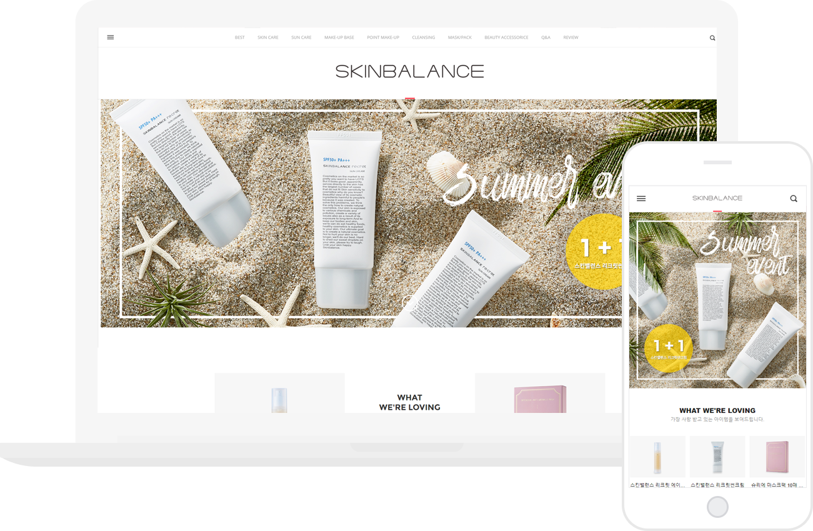

본문바로가기
스킨밸런스 반응형 작업
2017.06

참여도
100%
작업내용
메이크샵 사이트를 이용하여 제작되었으며, 기존에 운영되고있었던 홈페이지를 반응형으로 구현하였다.
기존에 고정된 소스들이 있어서, 어려움이 있었지만 미디어 쿼리를 이용하여 최대한 자연스러운 반응형 홈페이지를 구현하도록 하였다.
모바일사이트가 따로 있어서, 반응형 사이트 이외의 모바일 작업도 병행하였다.
사이트 바로가기